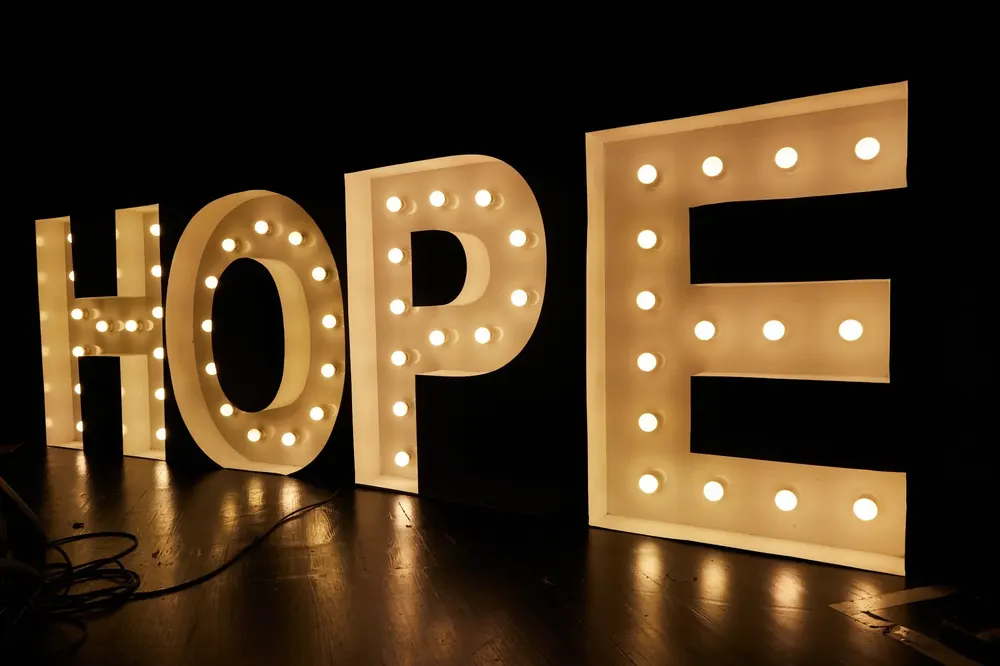

Celebrating your contributions.
In pursuit of the best possible outcomes for all upper GI and HPB disease. Every breakthrough begins with a patient, a question, and the generosity of people who believe in better outcomes.
Impact you can measure.
“We’re not just trying to find cancer earlier. We’re trying to spare patients the pain of unnecessary treatments, and give them back more time, more options, and more hope. Our ultimate goal is to improve the quality of life for people living with diseases of the oesophagus, stomach, liver and pancreas.”Professor Matthew Read · Director, The HOPE Fund
What your generosity makes possible.
Last year, your support helped drive 13 active research projects dedicated to improving how we diagnose, treat and care for people facing complex gastrointestinal and cancer conditions. These projects are not just studies; they represent hope for safer surgery, faster recovery, and longer, healthier lives.
More than 1,480 patients and clinical samples contributed to our research, transforming individual experiences into knowledge that benefits thousands more. Each participant’s contribution brings us closer to better treatments and stronger evidence-based care.
Our researchers published 16 peer-reviewed scientific papers, helping shape the future of surgical and cancer care both in Australia and internationally. Their excellence has been recognised with prestigious awards across major scientific forums, a testament to the impact of your investment in research.
Beyond the laboratory and operating theatre, your generosity supports patients long after treatment ends. Programs like POSSUM bring survivors, clinicians and families together, fostering connection, education and hope during recovery and beyond.

Add your contribution to this story.
Every dollar brings us one step closer to advancements that change the trajectory of these diseases.
Registered charity with DGR status. Donations of $2 or more are tax-deductible.